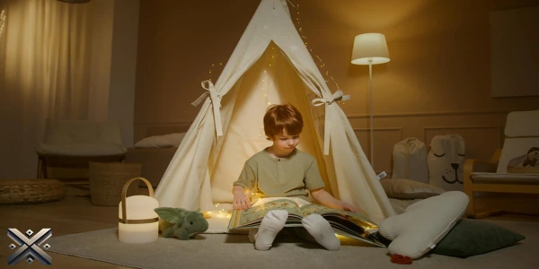
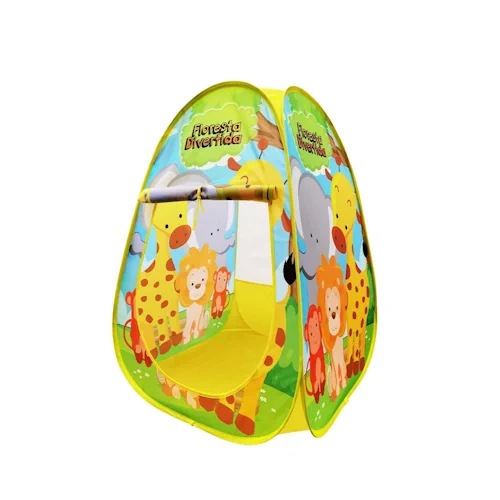
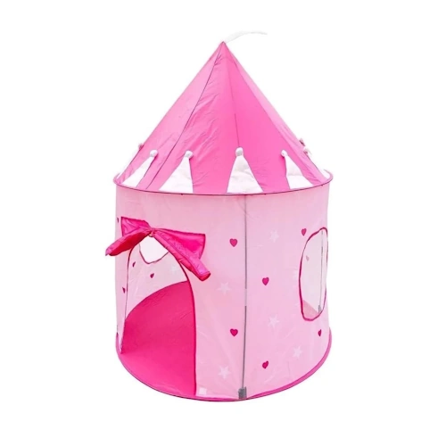
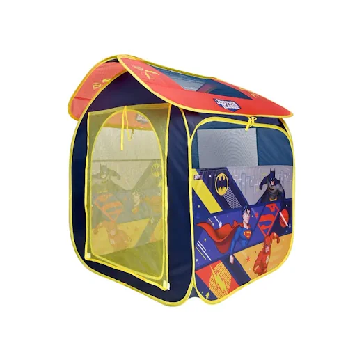
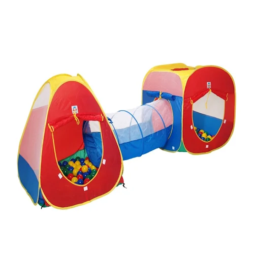
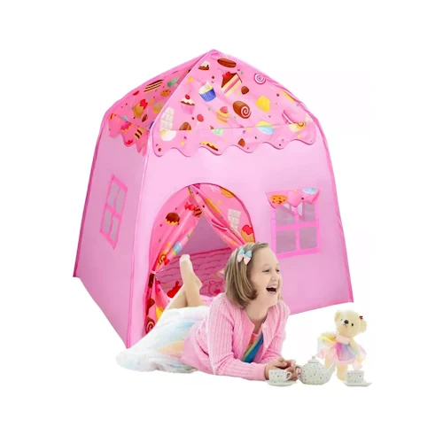

Está buscando a barraca infantil perfeita para proporcionar momentos de alegria e segurança para as crianças? Selecionamos as cinco melhores opções disponíveis no mercado em 2025 para ajudar você a escolher a ideal!
Consideramos fatores como segurança, durabilidade, praticidade e, claro, o quanto elas são divertidas. Dessa forma, garantimos que cada modelo listado atenda às necessidades das crianças e dos pais, oferecendo conforto e muita brincadeira.

As barracas infantis são mais do que simples brinquedos; elas criam um mundo de imaginação onde os pequenos podem se aventurar, ler histórias ou simplesmente relaxar. Com modelos variados, que vão desde cabanas temáticas até tendas coloridas, esses espaços proporcionam momentos inesquecíveis e incentivam a criatividade.
Além de serem um refúgio para a diversão, as barracas ajudam a desenvolver a autonomia e o senso de pertencimento da criança, oferecendo um cantinho especial só para ela. Podem ser montadas no quarto, na sala ou até no jardim, adaptando-se a diferentes ambientes e estilos de brincadeira.
Se você deseja adquirir uma barraca infantil, há diversas opções disponíveis em lojas físicas e plataformas online. Escolher um modelo resistente, seguro e de fácil montagem faz toda a diferença para garantir a melhor experiência para os pequenos. Invista nesse universo mágico e proporcione horas de entretenimento para as crianças!

Se o objetivo é encontrar uma barraca infantil acessível e funcional, a DM Toys Floresta Divertida é uma excelente escolha. Feita de poliéster dobrável, é fácil de montar e desmontar, facilitando o uso pelos pais e garantindo momentos incríveis para as crianças. O design com estampa exclusiva estimula a imaginação, tornando a brincadeira ainda mais envolvente. Além disso, o modelo acompanha uma bolsa de transporte, tornando-o compacto e prático para levar para qualquer lugar. Outra vantagem desse modelo é que ele pode ser usado tanto em ambientes internos quanto externos, proporcionando diversão em qualquer espaço da casa. Seu material é resistente o suficiente para suportar o uso diário, garantindo que as crianças possam brincar com segurança. Com um preço acessível e ótimo custo-benefício, essa barraca se torna uma opção interessante para pais que buscam um produto simples, mas eficiente.
Faixa de preço: R$ 71

Ideal para meninas, a barraca DM Toys DMT 5390 possui um lindo formato de castelo de princesas. Produzida em poliéster resistente, conta com uma estrutura reforçada de cabo de aço e fibra de vidro, garantindo durabilidade e segurança. Com microfuros para ventilação e uma porta de pano com velcro, esse modelo proporciona conforto adicional. Além de ser fácil de montar, também é compacta para transporte. As crianças adoram esse modelo, pois ele cria um ambiente lúdico que permite que elas se sintam verdadeiras princesas dentro de seu próprio castelo. A barraca é espaçosa o suficiente para permitir que mais de uma criança brinque ao mesmo tempo, promovendo a interação social. Além disso, seu design encantador e colorido ajuda a estimular a criatividade, tornando a brincadeira ainda mais divertida e mágica.
Faixa de preço: R$ 94

Para os fãs de super-heróis, a barraca infantil Zippy Toys Liga da Justiça é a escolha perfeita. Com estrutura dobrável e portátil, pode ser montada em qualquer lugar, criando um ambiente estimulante para a criatividade e a diversão. O design vibrante dos personagens da Liga da Justiça encanta os pequenos, enquanto a construção em poliéster resistente e metal garante maior durabilidade. Esse modelo é ideal para crianças que adoram se imaginar como seus heróis favoritos, proporcionando um espaço seguro onde podem brincar e criar histórias. Além disso, a barraca é leve e fácil de transportar, tornando-se uma excelente opção para levar para viagens ou para a casa dos avós. Seu material de alta qualidade garante resistência ao desgaste do dia a dia, permitindo que as crianças aproveitem ao máximo suas aventuras heroicas.
Faixa de preço: Entre R$ 154

Se a ideia é aliar uma barraca infantil com bolinhas para aumentar a diversão, a Braskit B07CJTNYP5 é uma ótima opção. Composta por duas tocas interligadas por um túnel, proporciona um ambiente cheio de aventura. Fabricada em poliéster resistente, é fácil de montar e acompanha 150 bolinhas coloridas, estimulando a interação e o desenvolvimento das crianças. Esse modelo é perfeito para estimular a atividade física, pois as crianças podem engatinhar pelo túnel e explorar cada espaço da barraca. Além disso, a presença das bolinhas adiciona um elemento sensorial, incentivando o desenvolvimento da coordenação motora e das habilidades sociais. Com um design vibrante e alegre, essa barraca se destaca como uma das melhores opções para proporcionar diversão completa e educativa.
Faixa de preço: R$ 529

Eleita a melhor barraca infantil custo-benefício de 2025, a Genérico BOD4PCLLX2 combina diversão e praticidade. Disponível nos modelos Astronauta para meninos e Rosa Candy para meninas, ela cria um ambiente lúdico e seguro para horas de entretenimento. Produzida em poliéster, polietileno e aço dobrável, é leve, resistente e de fácil montagem. Essa barraca se destaca por sua versatilidade, podendo ser usada em áreas internas e externas sem perder sua qualidade e resistência. Seu tamanho permite que várias crianças brinquem ao mesmo tempo, promovendo momentos de socialização e aprendizado. Além disso, seu design moderno e cores vibrantes tornam a experiência de brincar ainda mais envolvente, tornando-a a escolha perfeita para quem busca um produto durável e cheio de benefícios.
Faixa de preço: R$ 129
Agora que você conhece as 5 melhores barracas infantis de 2025, conta pra gente: qual delas chamou mais a sua atenção? Deixe seu comentário abaixo e compartilhe este guia com quem também está procurando a melhor opção para presentear os pequenos! Não se esqueça de verificar as ofertas disponíveis e garantir a barraca ideal para tornar a infância das crianças ainda mais mágica e especial.
Nota: Os preços mencionados podem variar conforme a época do ano e promoções vigentes.